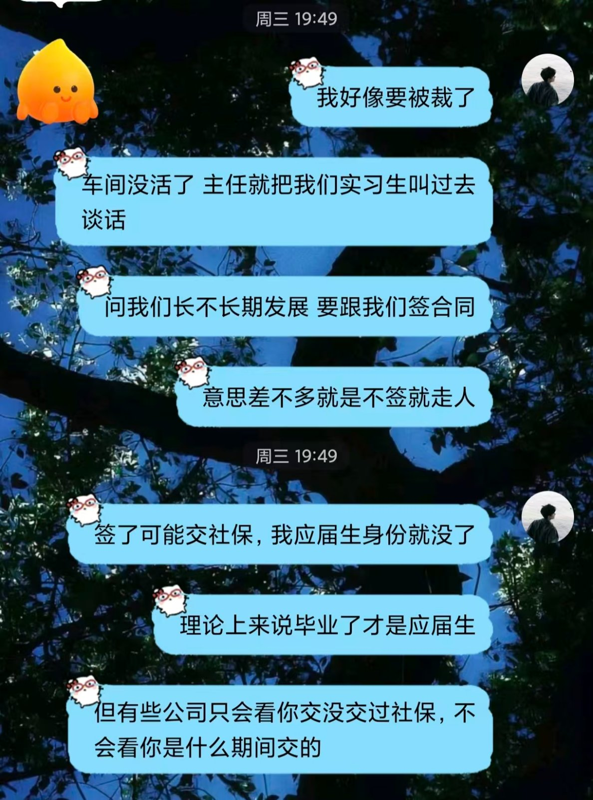
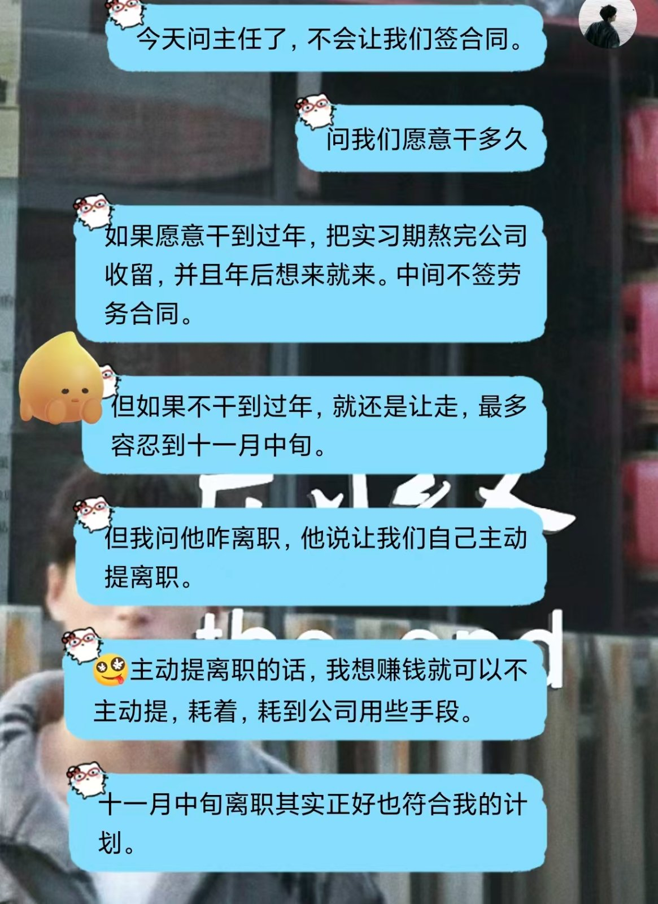
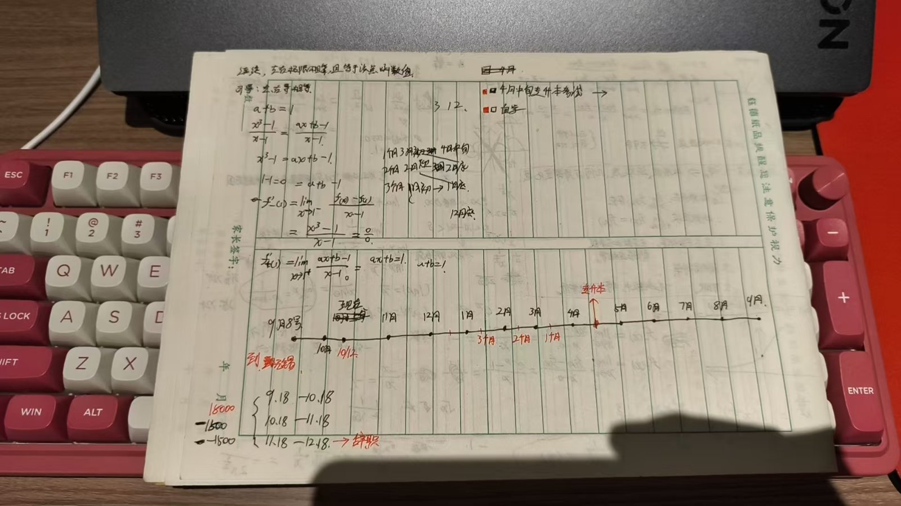

《小波折》
2026.10.23
今天下十点，我得到了结果。 前天车间主任叫我们实习生谈话，向我们长不长期发展要跟我们签合同意思差不多就是不签就走人，最多待到10月底。当时我们吓坏了。然后他问我们是现在能给结果还是先思考一下，当时我说思考一下，我的意思是当时我们几个实习生私聊一下，但他意思是让我们回家思考，正好和家里人沟通一下。正好这样给个周转时间，当天wjs气坏了，正好zzh下早班，我觉得这事重要正好我当天申请下早班，回去一起聊聊，晚上我们就一起出去吃了烧烤，路上饭局讨论了一会。回去的路上我们在大桥上停留了一会。我们也赶紧联系了当时带我们来的负责人。前天那天因为这件事整个人的状态也不太好，总憋着点什么，吃完饭后回公寓，11点我就睡着了。但半夜三点我醒了，到了五点才睡着，中间我就一直在想这件事，我其实想到的是，当时既有7月份入职，又有我们九月份入职，转正签合同三个月，他们签合同，我们不应该啊，我们还没干够三个月。我两个月都没有就让我走不合理。当时脑子一直想着这个结果。第二天也就是昨天是正常干了一天，（这一周一直在上十点下班，我能感受到我在写这篇文章时，我的思路非常不清晰。这篇文章我后续再补充，现在已经12点了我得睡了，今天不知道为啥挺精神的，可能是白天干活真干猛了。 记10.24 00:00 /我回来了现在是10.24 22:05，今天下5点的班我回来接着写）之后也就是给他结果的当天（23号），上午并没有叫我们过去，我猜着是负责人发力了，当天下午叫我们过去了。当时wjs在那里，给我们仔细解释了一下。不会签合同，如果我们能干到实习期结束（也就是2月份到过年），公司可以留你。但如果只能干到12月1月的话就不能留，还是要走。我们之后又问了问可不可以延期，他说最多到11月中旬。这其实也行，虽然我的计划是12月中旬。但也就承认了这个变化，我想着12月中旬是因为给专升本4个月时间，后面一想中间多出来的一个月我可以出去旅游和一个人在公寓搞自己的事情，我感觉很好。不好的方面就是赚的钱少，没钱换新手机。好，就这样吧，我刚刚学了会编程，我感觉我有些看不懂了，我有些悲观的预兆，我怕我自学最多学的啥也不是。没事的戒不掉，加油!



· 完 ·
写于 2026.10.24 22:22